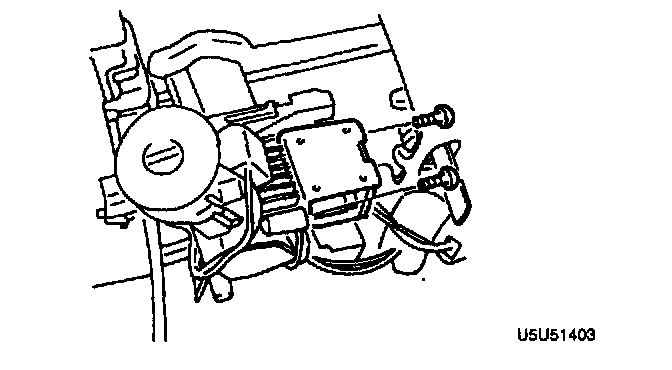

Key Interlock Solenoid Removal/Installation
KEY INTERLOCK SOLENOID REMOVAL/INSTALLATION1. Disconnect the negative battery cable.
2. Remove the column cover.
3. Disconnect the key interlock solenoid connector.
4. Remove the screws and the key interlock solenoid.

5. Install the key interlock solenoid and tighten the screws.
Tightening torque 6.9 - 12.7 Nm (70 - 130 kgf cm, 61 - 112 inch lbs.)
6. Verify that the key interlock solenoid operates.
7. Connect the key interlock solenoid connector.
8. Install the column cover.
9. Connect the negative battery cable.